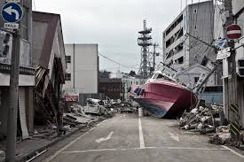

Algumas curiosidades...
Fukushima, Japão. 02:46 PM
No Japão, a única radiação provinda dos reatores nucleares Daiichi de Fukushima que se mede é o césio radioativo.
Não obstante, grandes quantidades de estrôncio 90 e de trítio estão espalhando-se por todo o Japão. A radiação do estrôncio e do trítio consiste em raios beta, e são muito difíceis de medir. Mas ambos são extremamente perigosos: o estrôncio pode causar leucemia e o trítio pode produzir desordens cromossómicas.
No Japão, a única radiação provinda dos reatores nucleares Daiichi de Fukushima que se mede é o césio radioativo. Não obstante, grandes quantidades de estrôncio 90 e de trítio estão espalhando-se por todo o Japão. A radiação do estrôncio e do trítio consiste em raios beta, e são muito difíceis de medir. Mas ambos são extremamente perigosos: o estrôncio pode causar leucemia e o trítio pode produzir desordens cromossómicas.
Dia 21 de setembro de 2013 (de novo, enquanto escrevia esta carta) o jornal Tokyo Shimbum informou que o governador de Tóquio, Naoki Inose, disse numa conferência de imprensa que o que Abe comunicou ao COI foi a sua intenção de pôr a situação sob controle.
A vida animal está retornando a Fukushima aos poucos, porém não devido a falta de radiação, mas sim a falta de humanos na região.
Como forma de incentivar as pessoas a visitarem a região, o Consulado Japonês isenta do pagamento da taxa do visto quem for morar, trabalhar, estudar ou visitar as províncias de Miyagi, Fukushima ou Iwate, justamente os três lugares mais afetados pelo tsunami. Para os turistas, para conseguir a isenção, basta apresentar um documento que comprove a sua estadia lá. Pode ser uma passagem de trem, reserva de hotel, bilhete aéreo, qualquer coisa que comprove que você realmente irá até a região. Faça já sua viajem para Fukushima!
